2022 National 5 Physics marking instructions
Source: Scottish Qualifications Authority (SQA) / Qualifications Scotland. This is a StemInteract HTML companion, not an official HTML edition. Selectable text is supplied alongside original page images. Use the images or original PDF for equations, powers, fractions, vector notation, tables and diagrams; text extraction cannot fully preserve mathematical layout.
Jump to a question
PDF page 1
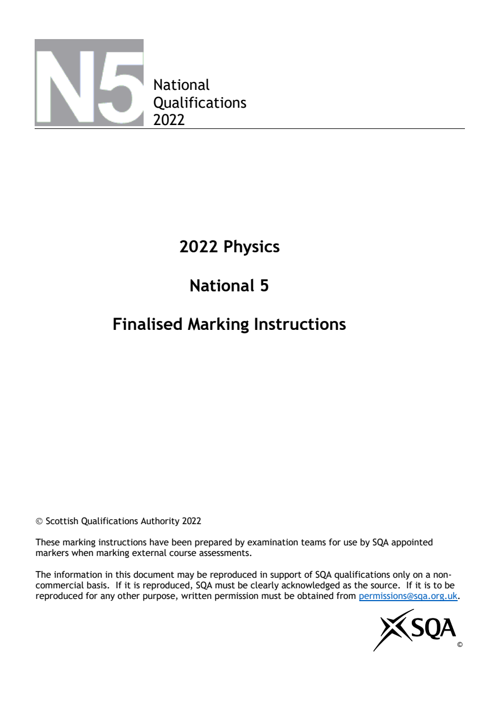
Selectable page text
National
Qualifications
2022
2022 Physics
National 5
Finalised Marking Instructions
© Scottish Qualifications Authority 2022
These marking instructions have been prepared by examination teams for use by SQA appointed
markers when marking external course assessments.
The information in this document may be reproduced in support of SQA qualifications only on a non-
commercial basis. If it is reproduced, SQA must be clearly acknowledged as the source. If it is to be
reproduced for any other purpose, written permission must be obtained from permissions@sqa.org.uk.
©PDF page 2
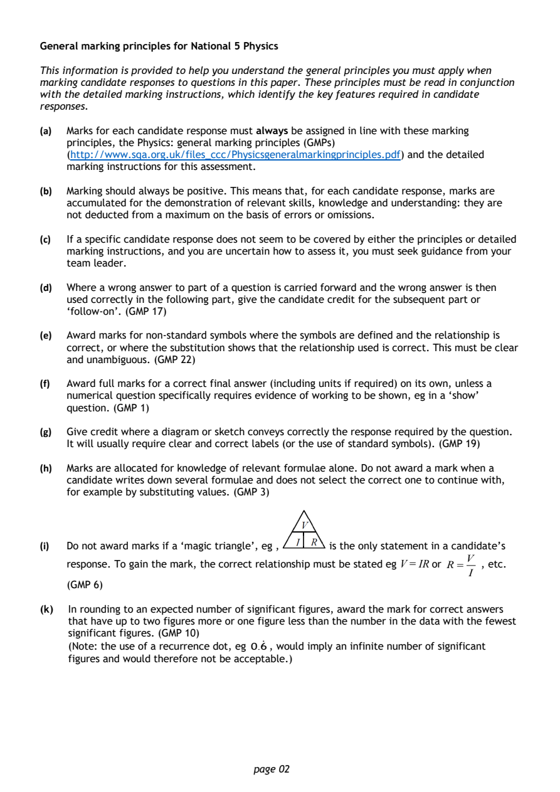
Selectable page text
General marking principles for National 5 Physics
This information is provided to help you understand the general principles you must apply when
marking candidate responses to questions in this paper. These principles must be read in conjunction
with the detailed marking instructions, which identify the key features required in candidate
responses.
(a) Marks for each candidate response must always be assigned in line with these marking
principles, the Physics: general marking principles (GMPs)
(http://www.sqa.org.uk/files_ccc/Physicsgeneralmarkingprinciples.pdf) and the detailed
marking instructions for this assessment.
(b) Marking should always be positive. This means that, for each candidate response, marks are
accumulated for the demonstration of relevant skills, knowledge and understanding: they are
not deducted from a maximum on the basis of errors or omissions.
(c) If a specific candidate response does not seem to be covered by either the principles or detailed
marking instructions, and you are uncertain how to assess it, you must seek guidance from your
team leader.
(d) Where a wrong answer to part of a question is carried forward and the wrong answer is then
used correctly in the following part, give the candidate credit for the subsequent part or
‘follow-on’. (GMP 17)
(e) Award marks for non-standard symbols where the symbols are defined and the relationship is
correct, or where the substitution shows that the relationship used is correct. This must be clear
and unambiguous. (GMP 22)
(f) Award full marks for a correct final answer (including units if required) on its own, unless a
numerical question specifically requires evidence of working to be shown, eg in a ‘show’
question. (GMP 1)
(g) Give credit where a diagram or sketch conveys correctly the response required by the question.
It will usually require clear and correct labels (or the use of standard symbols). (GMP 19)
(h) Marks are allocated for knowledge of relevant formulae alone. Do not award a mark when a
candidate writes down several formulae and does not select the correct one to continue with,
for example by substituting values. (GMP 3)
(i) Do not award marks if a ‘magic triangle’, eg , is the only statement in a candidate’s
V
response. To gain the mark, the correct relationship must be stated eg V = IR or R = , etc.
I
(GMP 6)
(k) In rounding to an expected number of significant figures, award the mark for correct answers
that have up to two figures more or one figure less than the number in the data with the fewest
significant figures. (GMP 10)
(Note: the use of a recurrence dot, eg 0.6, would imply an infinite number of significant
figures and would therefore not be acceptable.)
page 02PDF page 3
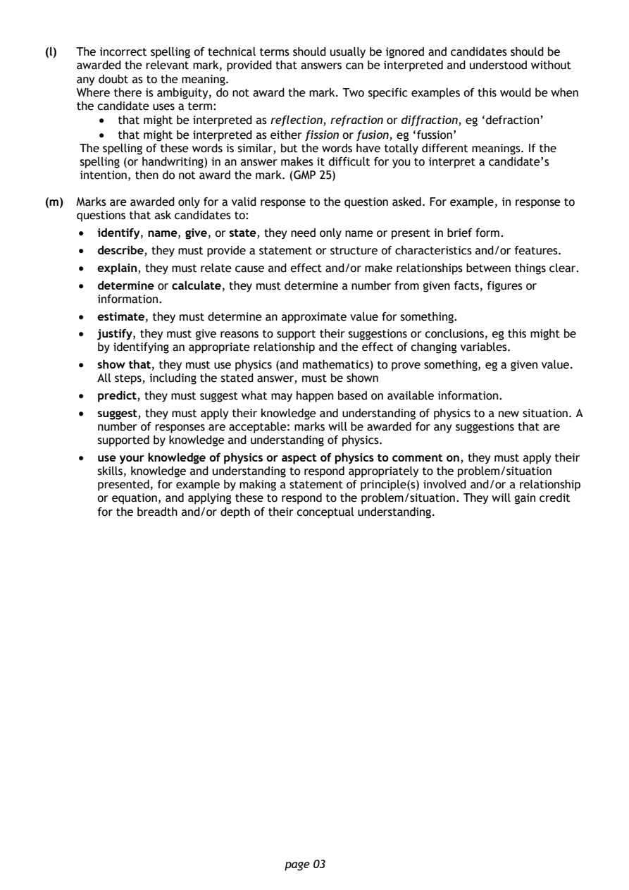
Selectable page text
(l) The incorrect spelling of technical terms should usually be ignored and candidates should be
awarded the relevant mark, provided that answers can be interpreted and understood without
any doubt as to the meaning.
Where there is ambiguity, do not award the mark. Two specific examples of this would be when
the candidate uses a term:
• that might be interpreted as reflection, refraction or diffraction, eg ‘defraction’
• that might be interpreted as either fission or fusion, eg ‘fussion’
The spelling of these words is similar, but the words have totally different meanings. If the
spelling (or handwriting) in an answer makes it difficult for you to interpret a candidate’s
intention, then do not award the mark. (GMP 25)
(m) Marks are awarded only for a valid response to the question asked. For example, in response to
questions that ask candidates to:
• identify, name, give, or state, they need only name or present in brief form.
• describe, they must provide a statement or structure of characteristics and/or features.
• explain, they must relate cause and effect and/or make relationships between things clear.
• determine or calculate, they must determine a number from given facts, figures or
information.
• estimate, they must determine an approximate value for something.
• justify, they must give reasons to support their suggestions or conclusions, eg this might be
by identifying an appropriate relationship and the effect of changing variables.
• show that, they must use physics (and mathematics) to prove something, eg a given value.
All steps, including the stated answer, must be shown
• predict, they must suggest what may happen based on available information.
• suggest, they must apply their knowledge and understanding of physics to a new situation. A
number of responses are acceptable: marks will be awarded for any suggestions that are
supported by knowledge and understanding of physics.
• use your knowledge of physics or aspect of physics to comment on, they must apply their
skills, knowledge and understanding to respond appropriately to the problem/situation
presented, for example by making a statement of principle(s) involved and/or a relationship
or equation, and applying these to respond to the problem/situation. They will gain credit
for the breadth and/or depth of their conceptual understanding.
page 03PDF page 4
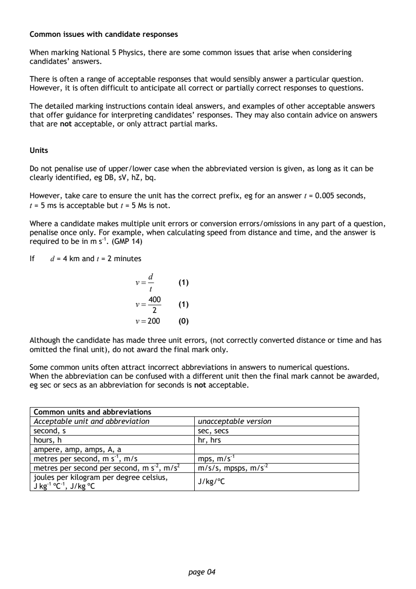
Selectable page text
Common issues with candidate responses
When marking National 5 Physics, there are some common issues that arise when considering
candidates’ answers.
There is often a range of acceptable responses that would sensibly answer a particular question.
However, it is often difficult to anticipate all correct or partially correct responses to questions.
The detailed marking instructions contain ideal answers, and examples of other acceptable answers
that offer guidance for interpreting candidates’ responses. They may also contain advice on answers
that are not acceptable, or only attract partial marks.
Units
Do not penalise use of upper/lower case when the abbreviated version is given, as long as it can be
clearly identified, eg DB, sV, hZ, bq.
However, take care to ensure the unit has the correct prefix, eg for an answer t = 0.005 seconds,
t = 5 ms is acceptable but t = 5 Ms is not.
Where a candidate makes multiple unit errors or conversion errors/omissions in any part of a question,
penalise once only. For example, when calculating speed from distance and time, and the answer is
required to be in ms⁻¹. (GMP 14)
If d = 4 km and t = 2 minutes
d
v= (1)
t
400
v= (1)
2
v=200 (0)
Although the candidate has made three unit errors, (not correctly converted distance or time and has
omitted the final unit), do not award the final mark only.
Some common units often attract incorrect abbreviations in answers to numerical questions.
When the abbreviation can be confused with a different unit then the final mark cannot be awarded,
eg sec or secs as an abbreviation for seconds is not acceptable.
Common units and abbreviations
Acceptable unit and abbreviation unacceptable version
second, s sec, secs
hours, h hr, hrs
ampere, amp, amps, A, a
metres per second, m s⁻¹, m/s mps, m/s⁻¹
metres per second per second, m s⁻², m/s² m/s/s, mpsps, m/s⁻²
joules per kilogram per degree celsius,
J/kg/ºC
J kg⁻¹ ºC⁻¹, J/kg ºC
page 04PDF page 5
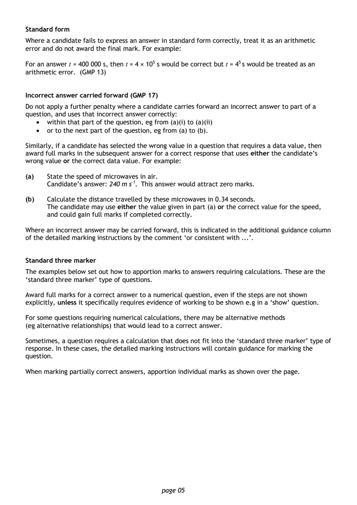
Selectable page text
Standard form
Where a candidate fails to express an answer in standard form correctly, treat it as an arithmetic
error and do not award the final mark. For example:
For an answer t = 400 000 s, then t = 4 × 10⁵ s would be correct but t = 4⁵ s would be treated as an
arithmetic error. (GMP 13)
Incorrect answer carried forward (GMP 17)
Do not apply a further penalty where a candidate carries forward an incorrect answer to part of a
question, and uses that incorrect answer correctly:
• within that part of the question, eg from (a)(i) to (a)(ii)
• or to the next part of the question, eg from (a) to (b).
Similarly, if a candidate has selected the wrong value in a question that requires a data value, then
award full marks in the subsequent answer for a correct response that uses either the candidate’s
wrong value or the correct data value. For example:
(a) State the speed of microwaves in air.
Candidate’s answer: 240 m s⁻¹. This answer would attract zero marks.
(b) Calculate the distance travelled by these microwaves in 0.34 seconds.
The candidate may use either the value given in part (a) or the correct value for the speed,
and could gain full marks if completed correctly.
Where an incorrect answer may be carried forward, this is indicated in the additional guidance column
of the detailed marking instructions by the comment ‘or consistent with ...’.
Standard three marker
The examples below set out how to apportion marks to answers requiring calculations. These are the
‘standard three marker’ type of questions.
Award full marks for a correct answer to a numerical question, even if the steps are not shown
explicitly, unless it specifically requires evidence of working to be shown e.g in a ‘show’ question.
For some questions requiring numerical calculations, there may be alternative methods
(eg alternative relationships) that would lead to a correct answer.
Sometimes, a question requires a calculation that does not fit into the ‘standard three marker’ type of
response. In these cases, the detailed marking instructions will contain guidance for marking the
question.
When marking partially correct answers, apportion individual marks as shown over the page.
page 05PDF page 6
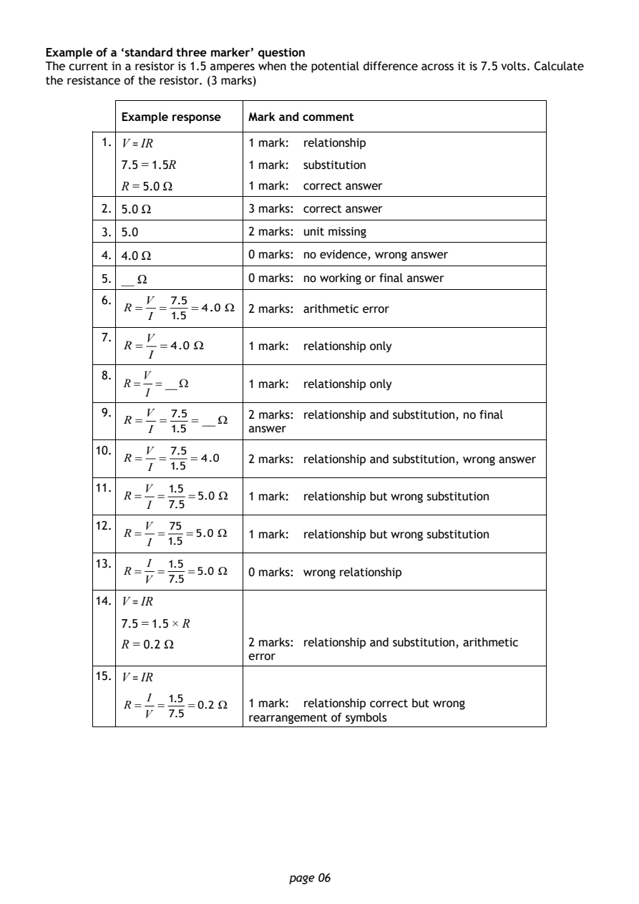
Selectable page text
Example of a ‘standard three marker’ question
The current in a resistor is 1.5 amperes when the potential difference across it is 7.5 volts. Calculate
the resistance of the resistor. (3 marks)
Example response Mark and comment
1. V = IR 1 mark: relationship
7.5 = 1.5R 1 mark: substitution
R = 5.0 Ω 1 mark: correct answer
2. 5.0 Ω 3 marks: correct answer
3. 5.0 2 marks: unit missing
4. 4.0 Ω 0 marks: no evidence, wrong answer
5. __ Ω 0 marks: no working or final answer
6. V 7.5
R = = =4.0 Ω 2 marks: arithmetic error
I 1.5
7. V
R = =4.0 Ω 1 mark: relationship only
I
8. V
R= =__Ω 1 mark: relationship only
I
9. V 7.5 2 marks: relationship and substitution, no final
R = = = __Ω
I 1.5 answer
10. V 7.5
R = = =4.0 2 marks: relationship and substitution, wrong answer
I 1.5
11. V 1.5
R= = =5.0 Ω 1 mark: relationship but wrong substitution
I 7.5
12. V 75
R= = =5.0 Ω 1 mark: relationship but wrong substitution
I 1.5
13. I 1.5
R= = =5.0 Ω 0 marks: wrong relationship
V 7.5
14. V = IR
7.5 = 1.5 × R
R = 0.2 Ω 2 marks: relationship and substitution, arithmetic
error
15. V = IR
I 1.5
R= = =0.2 Ω 1 mark: relationship correct but wrong
V 7.5 rearrangement of symbols
page 06PDF page 7
Section 1, Question 1Section 1, Question 2Section 1, Question 3Section 1, Question 4Section 1, Question 5Section 1, Question 6Section 1, Question 7Section 1, Question 8Section 1, Question 9Section 1, Question 10Section 1, Question 11Section 1, Question 12Section 1, Question 13Section 1, Question 14Section 1, Question 15Section 1, Question 16Section 1, Question 17Section 1, Question 18Section 1, Question 19Section 1, Question 20Section 1, Question 21Section 1, Question 22Section 1, Question 23Section 1, Question 24Section 1, Question 25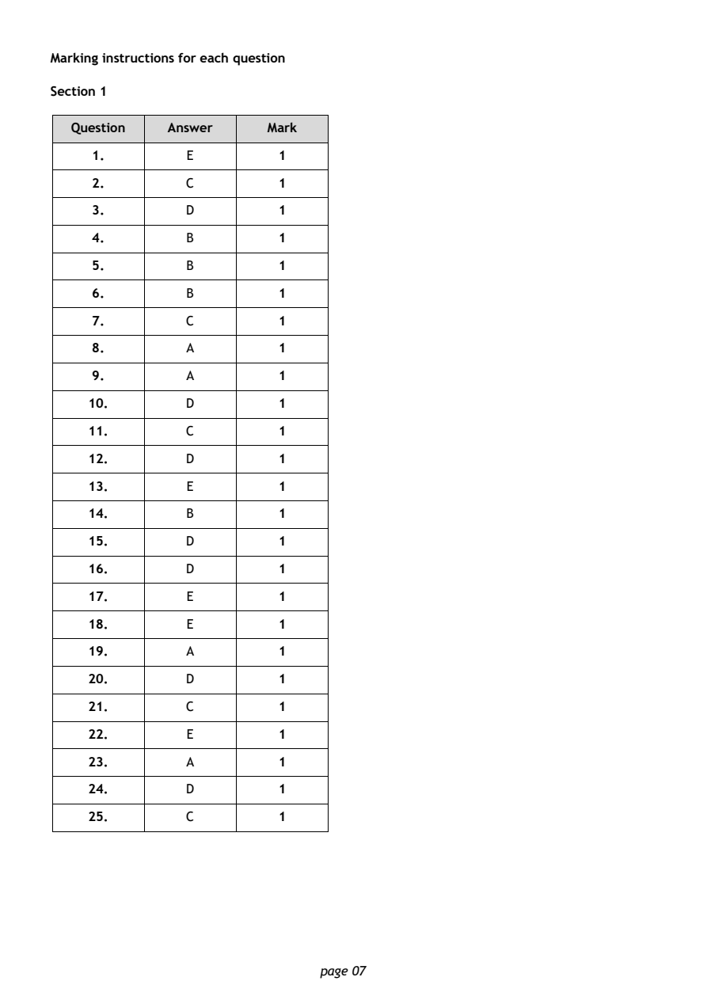
Selectable page text
Marking instructions for each question
Section 1
Question Answer Mark
1. E 1
2. C 1
3. D 1
4. B 1
5. B 1
6. B 1
7. C 1
8. A 1
9. A 1
10. D 1
11. C 1
12. D 1
13. E 1
14. B 1
15. D 1
16. D 1
17. E 1
18. E 1
19. A 1
20. D 1
21. C 1
22. E 1
23. A 1
24. D 1
25. C 1
page 07PDF page 8
Section 2, Question 1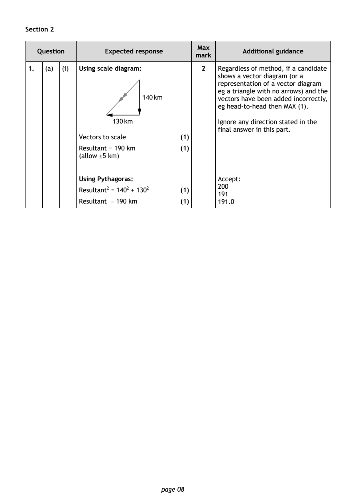
Selectable page text
Section 2
Max
Question Expected response Additional guidance
mark
1. (a) (i) Using scale diagram: 2 Regardless of method, if a candidate
shows a vector diagram (or a
representation of a vector diagram
eg a triangle with no arrows) and the
vectors have been added incorrectly,
eg head-to-head then MAX (1).
Ignore any direction stated in the
final answer in this part.
Vectors to scale (1)
Resultant = 190 km (1)
(allow ±5 km)
Using Pythagoras: Accept:
200
Resultant² = 140² + 130² (1)
191
Resultant = 190 km (1) 191.0
page 08PDF page 9
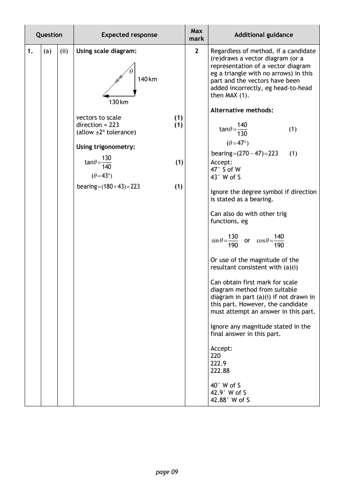
Selectable page text
Max
Question Expected response Additional guidance
mark
1. (a) (ii) Using scale diagram: 2 Regardless of method, if a candidate
(re)draws a vector diagram (or a
representation of a vector diagram
eg a triangle with no arrows) in this
part and the vectors have been
added incorrectly, eg head-to-head
then MAX (1).
Alternative methods:
vectors to scale (1)
direction = 223 (1) 140
tanθ= (1)
(allow ±2º tolerance) 130
(θ=47°)
Using trigonometry:
bearing=(270−47)=223 (1)
130
tanθ= (1) Accept:
140
47° S of W
(θ=43°) 43° W of S
bearing=(180+43)=223 (1)
Ignore the degree symbol if direction
is stated as a bearing.
Can also do with other trig
functions, eg
130 140
sinθ= or cosθ=
190 190
Or use of the magnitude of the
resultant consistent with (a)(i)
Can obtain first mark for scale
diagram method from suitable
diagram in part (a)(i) if not drawn in
this part. However, the candidate
must attempt an answer in this part.
Ignore any magnitude stated in the
final answer in this part.
Accept:
220
222.9
222.88
40° W of S
42.9° W of S
42.88° W of S
page 09PDF page 10
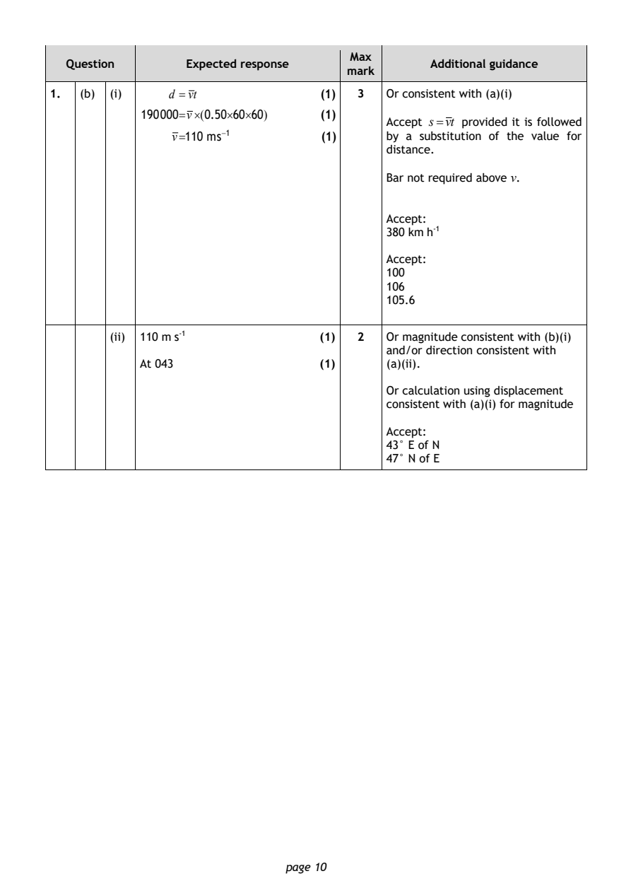
Selectable page text
Max
Question Expected response Additional guidance
mark
1. (b) (i) d =vt (1) 3 Or consistent with (a)(i)
190000=v×(0.50×60×60) (1)
Accept s=vt provided it is followed
v=110 ms⁻¹ (1) by a substitution of the value for
distance.
Bar not required above v.
Accept:
380 km h⁻¹
Accept:
100
106
105.6
(ii) 110 m s⁻¹ (1) 2 Or magnitude consistent with (b)(i)
and/or direction consistent with
At 043 (1) (a)(ii).
Or calculation using displacement
consistent with (a)(i) for magnitude
Accept:
43° E of N
47° N of E
page 10PDF page 11
Section 2, Question 2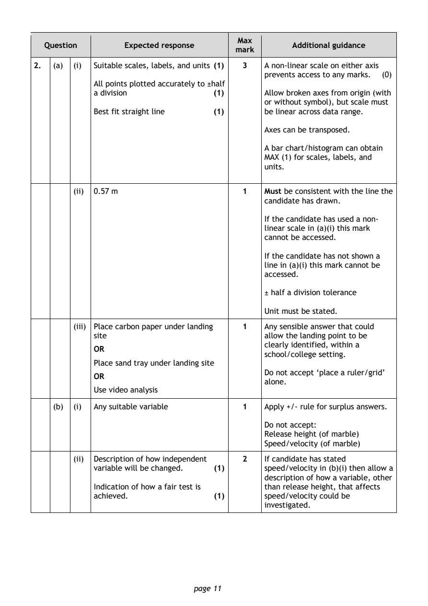
Selectable page text
Max
Question Expected response Additional guidance
mark
2. (a) (i) Suitable scales, labels, and units (1) 3 A non-linear scale on either axis
prevents access to any marks. (0)
All points plotted accurately to ±half
a division (1) Allow broken axes from origin (with
or without symbol), but scale must
Best fit straight line (1) be linear across data range.
Axes can be transposed.
A bar chart/histogram can obtain
MAX (1) for scales, labels, and
units.
(ii) 0.57 m 1 Must be consistent with the line the
candidate has drawn.
If the candidate has used a non-
linear scale in (a)(i) this mark
cannot be accessed.
If the candidate has not shown a
line in (a)(i) this mark cannot be
accessed.
± half a division tolerance
Unit must be stated.
(iii) Place carbon paper under landing 1 Any sensible answer that could
site allow the landing point to be
clearly identified, within a
OR
school/college setting.
Place sand tray under landing site
Do not accept ‘place a ruler/grid’
OR
alone.
Use video analysis
(b) (i) Any suitable variable 1 Apply +/- rule for surplus answers.
Do not accept:
Release height (of marble)
Speed/velocity (of marble)
(ii) Description of how independent 2 If candidate has stated
variable will be changed. (1) speed/velocity in (b)(i) then allow a
description of how a variable, other
Indication of how a fair test is than release height, that affects
achieved. (1) speed/velocity could be
investigated.
page 11PDF page 12
Section 2, Question 3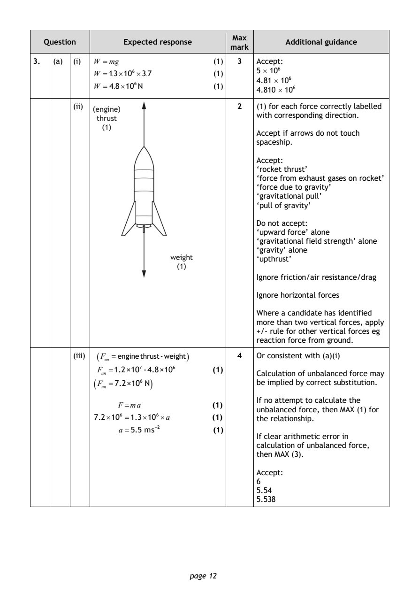
Selectable page text
Max
Question Expected response Additional guidance
mark
3. (a) (i) W =mg (1) 3 Accept:
W =1.3×10⁶×3.7 (1)
5 × 10⁶
4.81 × 10⁶
W =4.8×10⁶N (1)
4.810 × 10⁶
(ii) 2 (1) for each force correctly labelled
with corresponding direction.
Accept if arrows do not touch
spaceship.
Accept:
‘rocket thrust’
‘force from exhaust gases on rocket’
‘force due to gravity’
‘gravitational pull’
‘pull of gravity’
Do not accept:
‘upward force’ alone
‘gravitational field strength’ alone
‘gravity’ alone
‘upthrust’
Ignore friction/air resistance/drag
Ignore horizontal forces
Where a candidate has identified
more than two vertical forces, apply
+/- rule for other vertical forces eg
reaction force from ground.
(iii) (Fᵤₙ=enginethrust-weight) 4 Or consistent with (a)(i)
Fᵤₙ =1.2×10⁷-4.8×10⁶ (1)
Calculation of unbalanced force may
( Fᵤₙ =7.2×10⁶ N ) be implied by correct substitution.
If no attempt to calculate the
F=ma (1)
unbalanced force, then MAX (1) for
7.2×10⁶ =1.3×10⁶×a (1) the relationship.
a =5.5 ms⁻² (1)
If clear arithmetic error in
calculation of unbalanced force,
then MAX (3).
Accept:
6
5.54
5.538
page 12PDF page 13
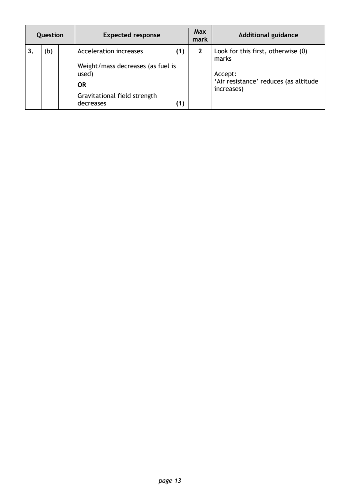
Selectable page text
Max
Question Expected response Additional guidance
mark
3. (b) Acceleration increases (1) 2 Look for this first, otherwise (0)
marks
Weight/mass decreases (as fuel is
used) Accept:
‘Air resistance’ reduces (as altitude
OR
increases)
Gravitational field strength
decreases (1)
page 13PDF page 14
Section 2, Question 4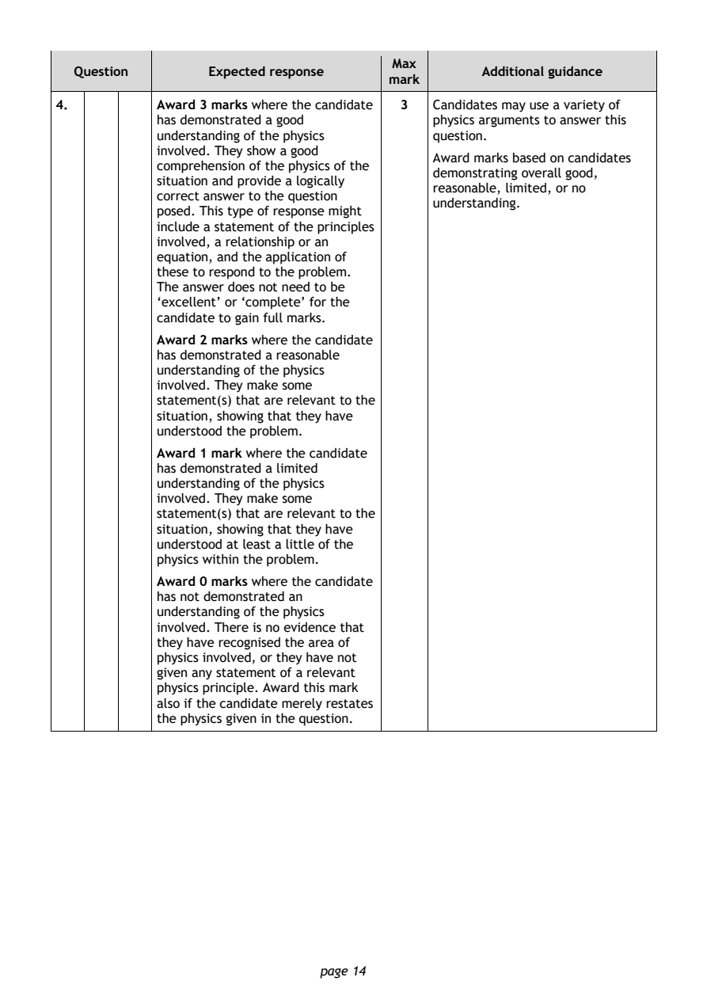
Selectable page text
Max
Question Expected response Additional guidance
mark
4. Award 3 marks where the candidate 3 Candidates may use a variety of
has demonstrated a good physics arguments to answer this
understanding of the physics question.
involved. They show a good
Award marks based on candidates
comprehension of the physics of the
demonstrating overall good,
situation and provide a logically
reasonable, limited, or no
correct answer to the question
understanding.
posed. This type of response might
include a statement of the principles
involved, a relationship or an
equation, and the application of
these to respond to the problem.
The answer does not need to be
‘excellent’ or ‘complete’ for the
candidate to gain full marks.
Award 2 marks where the candidate
has demonstrated a reasonable
understanding of the physics
involved. They make some
statement(s) that are relevant to the
situation, showing that they have
understood the problem.
Award 1 mark where the candidate
has demonstrated a limited
understanding of the physics
involved. They make some
statement(s) that are relevant to the
situation, showing that they have
understood at least a little of the
physics within the problem.
Award 0 marks where the candidate
has not demonstrated an
understanding of the physics
involved. There is no evidence that
they have recognised the area of
physics involved, or they have not
given any statement of a relevant
physics principle. Award this mark
also if the candidate merely restates
the physics given in the question.
page 14PDF page 15
Section 2, Question 5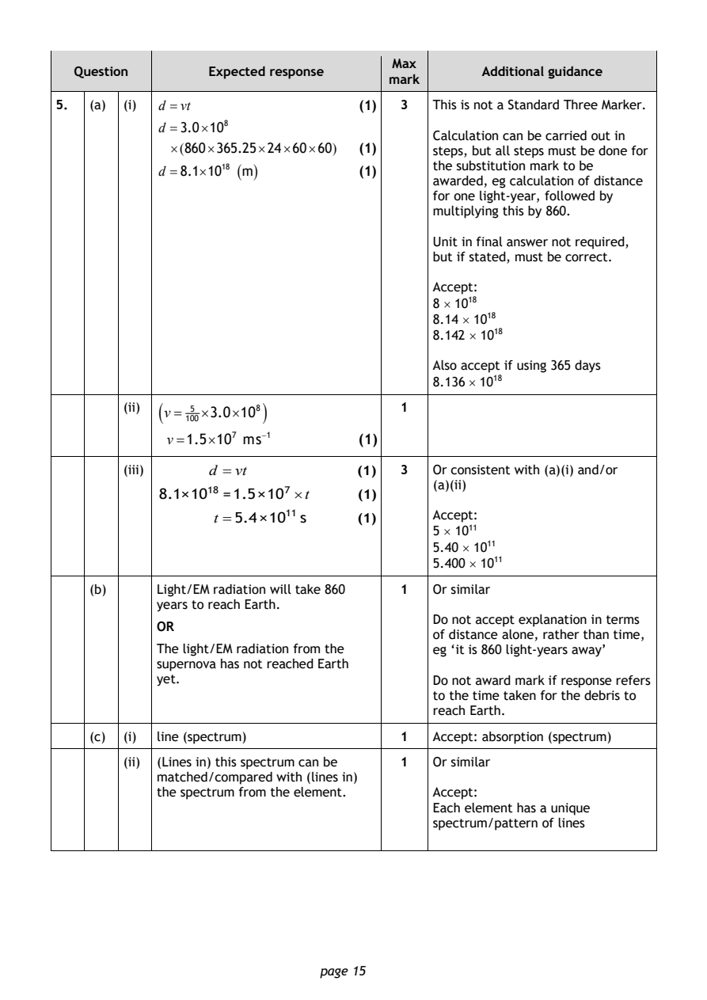
Selectable page text
Max
Question Expected response Additional guidance
mark
5. (a) (i) d =vt (1) 3 This is not a Standard Three Marker.
d =3.0×10⁸
Calculation can be carried out in
×(860×365.25×24×60×60) (1) steps, but all steps must be done for
d =8.1×10¹⁸ (m) (1) the substitution mark to be
awarded, eg calculation of distance
for one light-year, followed by
multiplying this by 860.
Unit in final answer not required,
but if stated, must be correct.
Accept:
8 × 10¹⁸
8.14 × 10¹⁸
8.142 × 10¹⁸
Also accept if using 365 days
8.136 × 10¹⁸
(ii) ( ) 1
v= ₁₀⁵ ×3.0×10⁸
0
v=1.5×10⁷ ms⁻¹ (1)
(iii) d = vt (1) 3 Or consistent with (a)(i) and/or
(a)(ii)
8.1×10¹⁸ =1.5×10⁷ ×t (1)
t =5.4×10¹¹ s (1) Accept:
5 × 10¹¹
5.40 × 10¹¹
5.400 × 10¹¹
(b) Light/EM radiation will take 860 1 Or similar
years to reach Earth.
Do not accept explanation in terms
OR
of distance alone, rather than time,
The light/EM radiation from the eg ‘it is 860 light-years away’
supernova has not reached Earth
yet. Do not award mark if response refers
to the time taken for the debris to
reach Earth.
(c) (i) line (spectrum) 1 Accept: absorption (spectrum)
(ii) (Lines in) this spectrum can be 1 Or similar
matched/compared with (lines in)
the spectrum from the element. Accept:
Each element has a unique
spectrum/pattern of lines
page 15PDF page 16
Section 2, Question 6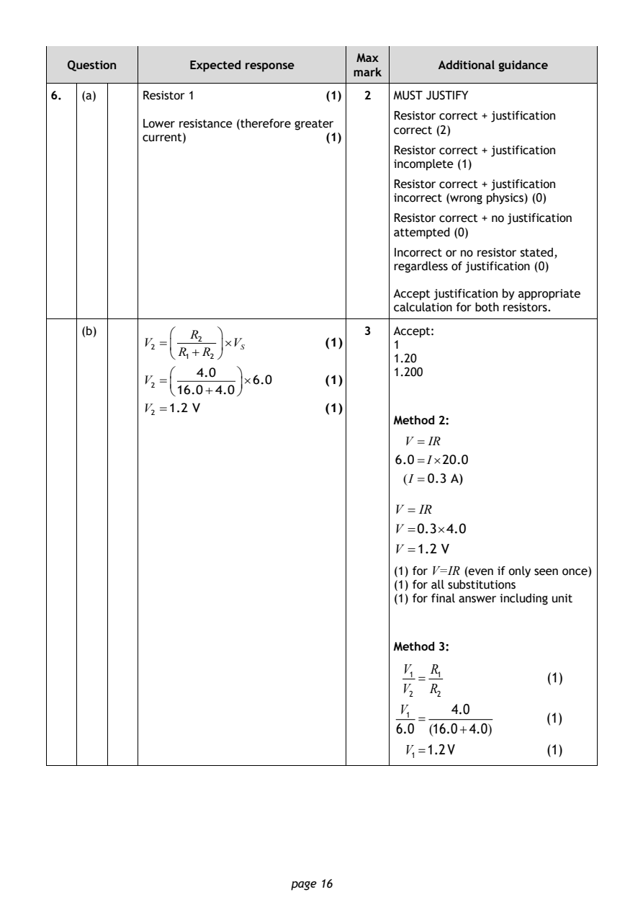
Selectable page text
Max
Question Expected response Additional guidance
mark
6. (a) Resistor 1 (1) 2 MUST JUSTIFY
Resistor correct + justification
Lower resistance (therefore greater
correct (2)
current) (1)
Resistor correct + justification
incomplete (1)
Resistor correct + justification
incorrect (wrong physics) (0)
Resistor correct + no justification
attempted (0)
Incorrect or no resistor stated,
regardless of justification (0)
Accept justification by appropriate
calculation for both resistors.
(b) R₂ 3 Accept:
V₂ = ×V_{S} (1) 1
R₁+R₂
1.20
4.0 1.200
V₂ = ×6.0 (1)
16.0+4.0
V₂ =1.2 V (1)
Method 2:
V = IR
6.0=I×20.0
(I =0.3 A)
V = IR
V =0.3×4.0
V =1.2 V
(1) for V=IR (even if only seen once)
(1) for all substitutions
(1) for final answer including unit
Method 3:
V₁ R₁
= (1)
V₂ R₂
V₁ 4.0
= (1)
6.0 (16.0+4.0)
V₁=1.2V (1)
page 16PDF page 17
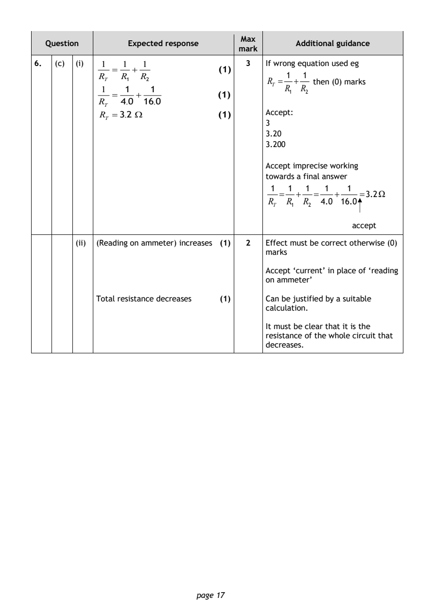
Selectable page text
Max
Question Expected response Additional guidance
mark
6. (c) (i) 1 1 1 3 If wrong equation used eg
= + (1)
R_{T} R₁ R₂ 1 1
R_{T} = + then (0) marks
1 1 1 R₁ R₂
= + (1)
R_{T} 4.0 16.0
R_{T} =3.2 Ω (1) Accept:
3
3.20
3.200
Accept imprecise working
towards a final answer
1 1 1 1 1
= + = + =3.2Ω
R_{T} R₁ R₂ 4.0 16.0
accept
(ii) (Reading on ammeter) increases (1) 2 Effect must be correct otherwise (0)
marks
Accept ‘current’ in place of ‘reading
on ammeter’
Total resistance decreases (1) Can be justified by a suitable
calculation.
It must be clear that it is the
resistance of the whole circuit that
decreases.
page 17PDF page 18
Section 2, Question 7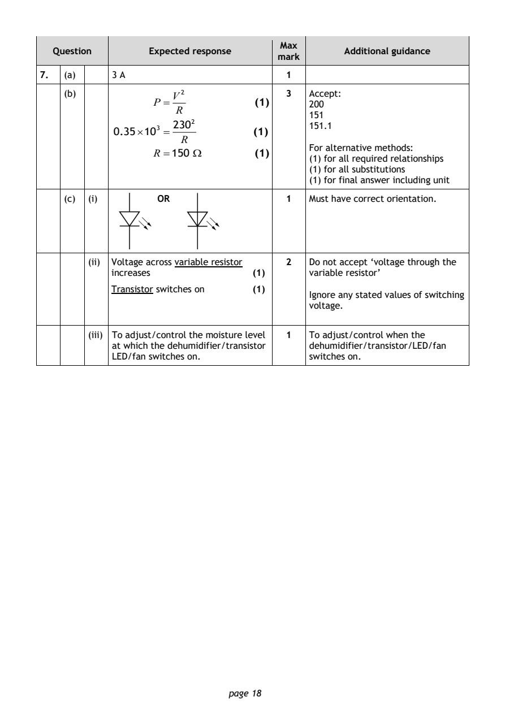
Selectable page text
Max
Question Expected response Additional guidance
mark
7. (a) 3 A 1
(b) V² 3 Accept:
P = (1) 200
R
151
230² 151.1
0.35×10³ = (1)
R
For alternative methods:
R =150 Ω (1)
(1) for all required relationships
(1) for all substitutions
(1) for final answer including unit
(c) (i) OR 1 Must have correct orientation.
(ii) Voltage across variable resistor 2 Do not accept ‘voltage through the
increases (1) variable resistor’
Transistor switches on (1)
Ignore any stated values of switching
voltage.
(iii) To adjust/control the moisture level 1 To adjust/control when the
at which the dehumidifier/transistor dehumidifier/transistor/LED/fan
LED/fan switches on. switches on.
page 18PDF page 19
Section 2, Question 8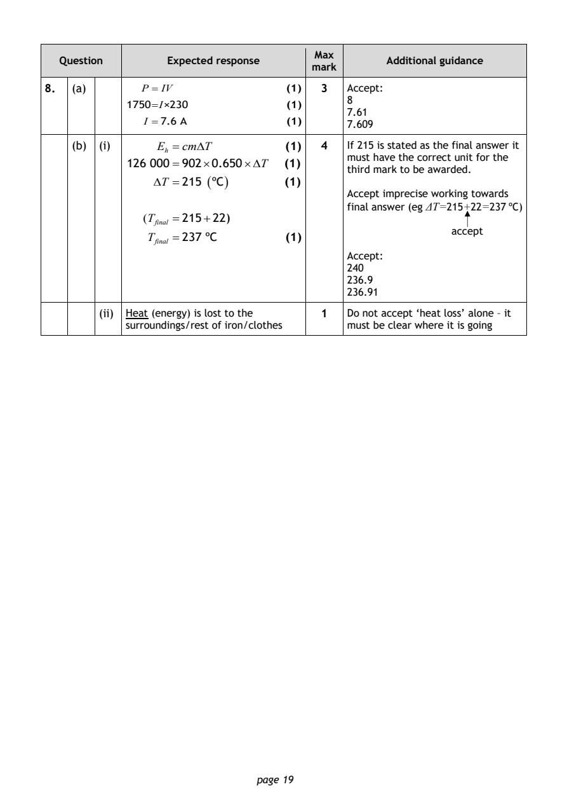
Selectable page text
Max
Question Expected response Additional guidance
mark
8. (a) P = IV (1) 3 Accept:
8
1750=I×230 (1)
7.61
I =7.6 A (1) 7.609
(b) (i) Eₕ =cm∆T (1) 4 If 215 is stated as the final answer it
must have the correct unit for the
126 000 =902×0.650×∆T (1)
third mark to be awarded.
∆T =215 (ºC) (1)
Accept imprecise working towards
final answer (eg ΔT=215+22=237 ºC)
(T_{f}ᵢₙₐₗ =215+22)
accept
T_{f}ᵢₙₐₗ =237 ºC (1)
Accept:
240
236.9
2 36.91
(ii) Heat (energy) is lost to the 1 Do not accept ‘heat loss’ alone – it
surroundings/rest of iron/clothes must be clear where it is going
page 19PDF page 20
Section 2, Question 9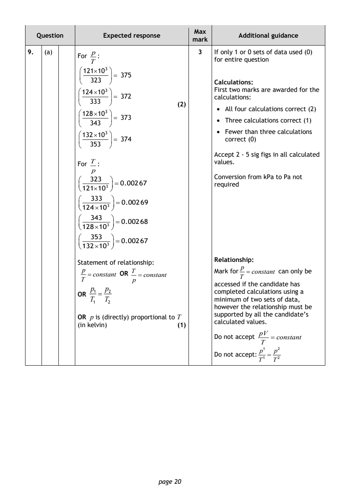
Selectable page text
Max
Question Expected response Additional guidance
mark
9. (a) p 3 If only 1 or 0 sets of data used (0)
For :
for entire question
T
121×10³
= 375
323
Calculations:
First two marks are awarded for the
124×10³
= 372 calculations:
333 (2)
• All four calculations correct (2)
128×10³
= 373 • Three calculations correct (1)
343
• Fewer than three calculations
132×10³
= 374 correct (0)
353
Accept 2 - 5 sig figs in all calculated
T values.
For :
p
Conversion from kPa to Pa not
323
=0.00267 required
121×10³
333
=0.00269
124×10³
343
=0.00268
128×10³
353
=0.00267
132×10³
Relationship:
Statement of relationship:
p
p T Mark for =constant can only be
=constant OR =constant T
T p
accessed if the candidate has
p₁ p₂
OR = completed calculations using a
T₁ T₂ minimum of two sets of data,
however the relationship must be
supported by all the candidate’s
OR p is (directly) proportional to T
calculated values.
(in kelvin) (1)
pV
Do not accept =constant
T
p¹ p²
Do not accept: =
T¹ T²
page 20PDF page 21
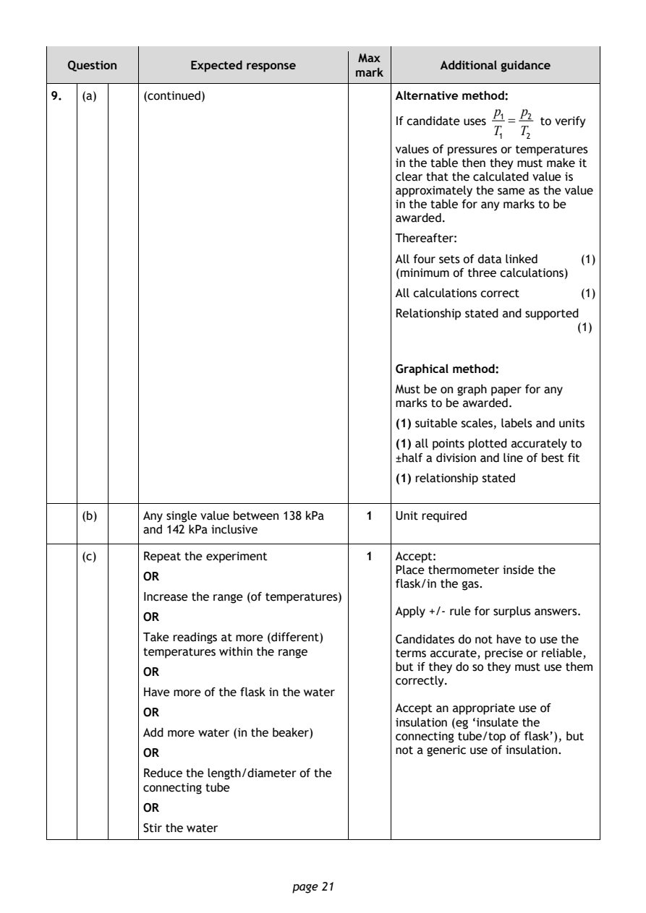
Selectable page text
Max
Question Expected response Additional guidance
mark
9. (a) (continued) Alternative method:
p₁ p₂
If candidate uses = to verify
T₁ T₂
values of pressures or temperatures
in the table then they must make it
clear that the calculated value is
approximately the same as the value
in the table for any marks to be
awarded.
Thereafter:
All four sets of data linked (1)
(minimum of three calculations)
All calculations correct (1)
Relationship stated and supported
(1)
Graphical method:
Must be on graph paper for any
marks to be awarded.
(1) suitable scales, labels and units
(1) all points plotted accurately to
±half a division and line of best fit
(1) relationship stated
(b) Any single value between 138 kPa 1 Unit required
and 142 kPa inclusive
(c) Repeat the experiment 1 Accept:
Place thermometer inside the
OR
flask/in the gas.
Increase the range (of temperatures)
Apply +/- rule for surplus answers.
OR
Take readings at more (different) Candidates do not have to use the
temperatures within the range terms accurate, precise or reliable,
but if they do so they must use them
OR
correctly.
Have more of the flask in the water
Accept an appropriate use of
OR
insulation (eg ‘insulate the
Add more water (in the beaker)
connecting tube/top of flask’), but
OR not a generic use of insulation.
Reduce the length/diameter of the
connecting tube
OR
Stir the water
page 21PDF page 22
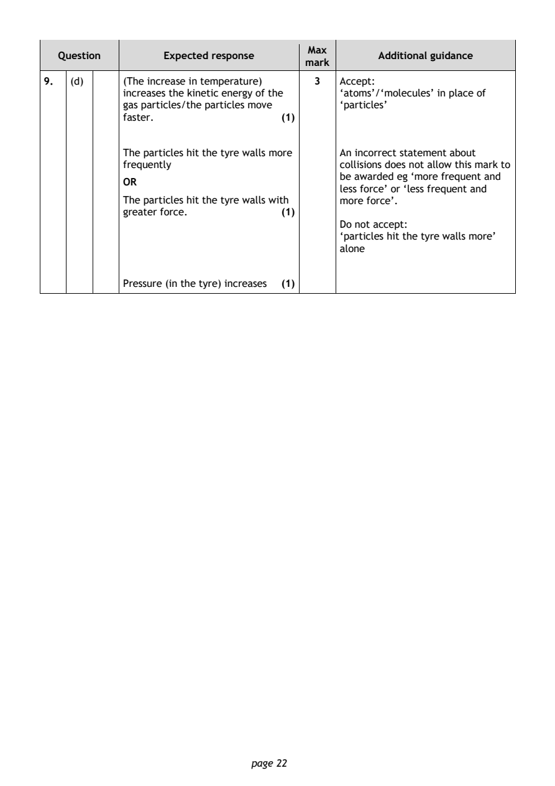
Selectable page text
Max
Question Expected response Additional guidance
mark
9. (d) (The increase in temperature) 3 Accept:
increases the kinetic energy of the ‘atoms’/‘molecules’ in place of
gas particles/the particles move ‘particles’
faster. (1)
The particles hit the tyre walls more An incorrect statement about
frequently collisions does not allow this mark to
be awarded eg ‘more frequent and
OR
less force’ or ‘less frequent and
The particles hit the tyre walls with more force’.
greater force. (1)
Do not accept:
‘particles hit the tyre walls more’
alone
Pressure (in the tyre) increases (1)
page 22PDF page 23
Section 2, Question 10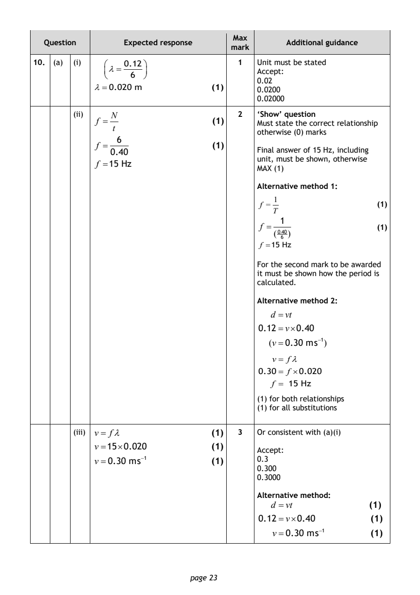
Selectable page text
Max
Question Expected response Additional guidance
mark
10. (a) (i) 0.12 1 Unit must be stated
λ=
Accept:
6
0.02
λ=0.020 m (1)
0.0200
0.02000
(ii) N 2 ‘Show’ question
f = (1)
Must state the correct relationship
t
otherwise (0) marks
6
f = (1)
0.40 Final answer of 15 Hz, including
unit, must be shown, otherwise
f =15 Hz
MAX (1)
Alternative method 1:
1
f = (1)
T
1
f = (1)
(0.40)
f =15 ⁶Hz
For the second mark to be awarded
it must be shown how the period is
calculated.
Alternative method 2:
d =vt
0.12=v×0.40
(v =0.30 ms⁻¹)
v = fλ
0.30 = f ×0.020
f = 15 Hz
(1) for both relationships
(1) for all substitutions
(iii) v = fλ (1) 3 Or consistent with (a)(i)
v =15×0.020 (1)
Accept:
v =0.30 ms⁻¹ (1) 0.3
0.300
0.3000
Alternative method:
d =vt (1)
0.12=v×0.40 (1)
v =0.30 ms⁻¹ (1)
page 23PDF page 24
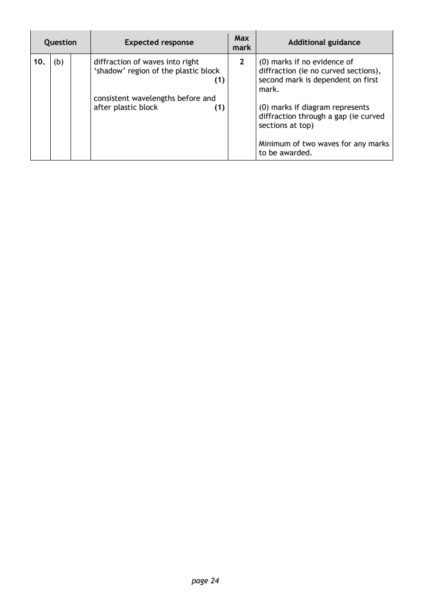
Selectable page text
Max
Question Expected response Additional guidance
mark
10. (b) diffraction of waves into right 2 (0) marks if no evidence of
‘shadow’ region of the plastic block diffraction (ie no curved sections),
(1) second mark is dependent on first
mark.
consistent wavelengths before and
a fter plastic block (1) (0) marks if diagram represents
diffraction through a gap (ie curved
sections at top)
Minimum of two waves for any marks
to be awarded.
page 24PDF page 25
Section 2, Question 11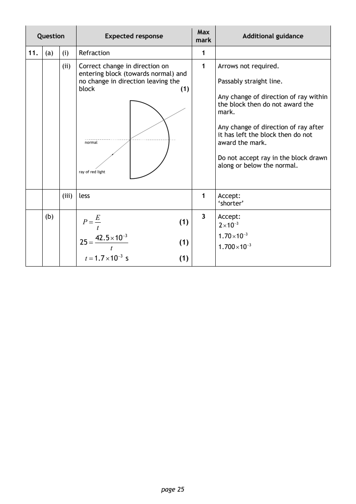
Selectable page text
Max
Question Expected response Additional guidance
mark
11. (a) (i) Refraction 1
(ii) Correct change in direction on 1 Arrows not required.
entering block (towards normal) and
no change in direction leaving the Passably straight line.
block (1)
Any change of direction of ray within
the block then do not award the
mark.
Any change of direction of ray after
it has left the block then do not
award the mark.
Do not accept ray in the block drawn
along or below the normal.
(iii) less 1 Accept:
‘shorter’
(b) E 3 Accept:
P = (1)
t
2×10⁻³
42.5×10⁻³ 1.70×10⁻³
25= (1)
t 1.700×10⁻³
t =1.7×10⁻³ s (1)
page 25PDF page 26
Section 2, Question 12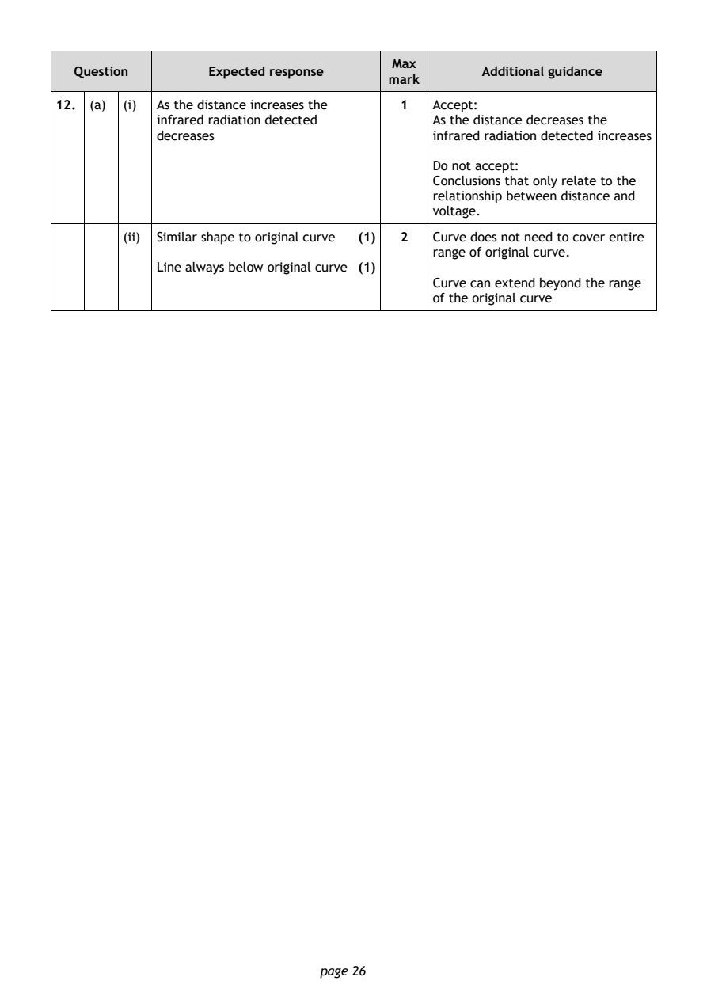
Selectable page text
Max
Question Expected response Additional guidance
mark
12. (a) (i) As the distance increases the 1 Accept:
infrared radiation detected As the distance decreases the
decreases infrared radiation detected increases
Do not accept:
Conclusions that only relate to the
relationship between distance and
voltage.
(ii) Similar shape to original curve (1) 2 Curve does not need to cover entire
range of original curve.
Line always below original curve (1)
Curve can extend beyond the range
of the original curve
page 26PDF page 27
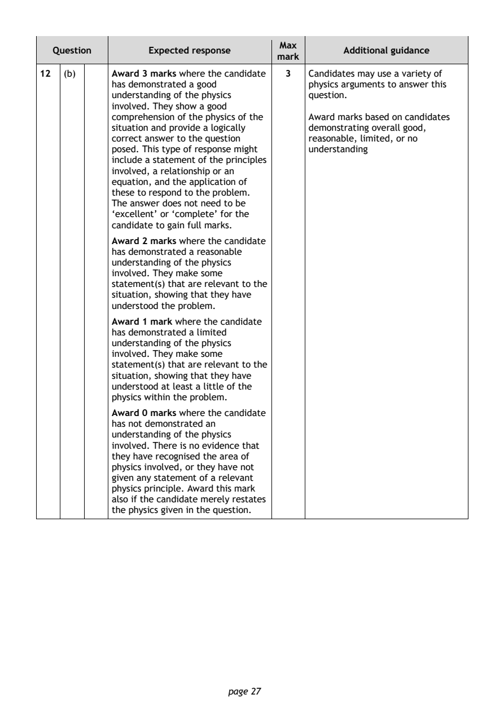
Selectable page text
Max
Question Expected response Additional guidance
mark
12 (b) Award 3 marks where the candidate 3 Candidates may use a variety of
has demonstrated a good physics arguments to answer this
understanding of the physics question.
involved. They show a good
comprehension of the physics of the Award marks based on candidates
situation and provide a logically demonstrating overall good,
correct answer to the question reasonable, limited, or no
posed. This type of response might understanding
include a statement of the principles
involved, a relationship or an
equation, and the application of
these to respond to the problem.
The answer does not need to be
‘excellent’ or ‘complete’ for the
candidate to gain full marks.
Award 2 marks where the candidate
has demonstrated a reasonable
understanding of the physics
involved. They make some
statement(s) that are relevant to the
situation, showing that they have
understood the problem.
Award 1 mark where the candidate
has demonstrated a limited
understanding of the physics
involved. They make some
statement(s) that are relevant to the
situation, showing that they have
understood at least a little of the
physics within the problem.
Award 0 marks where the candidate
has not demonstrated an
understanding of the physics
involved. There is no evidence that
they have recognised the area of
physics involved, or they have not
given any statement of a relevant
physics principle. Award this mark
also if the candidate merely restates
the physics given in the question.
page 27PDF page 28
Section 2, Question 13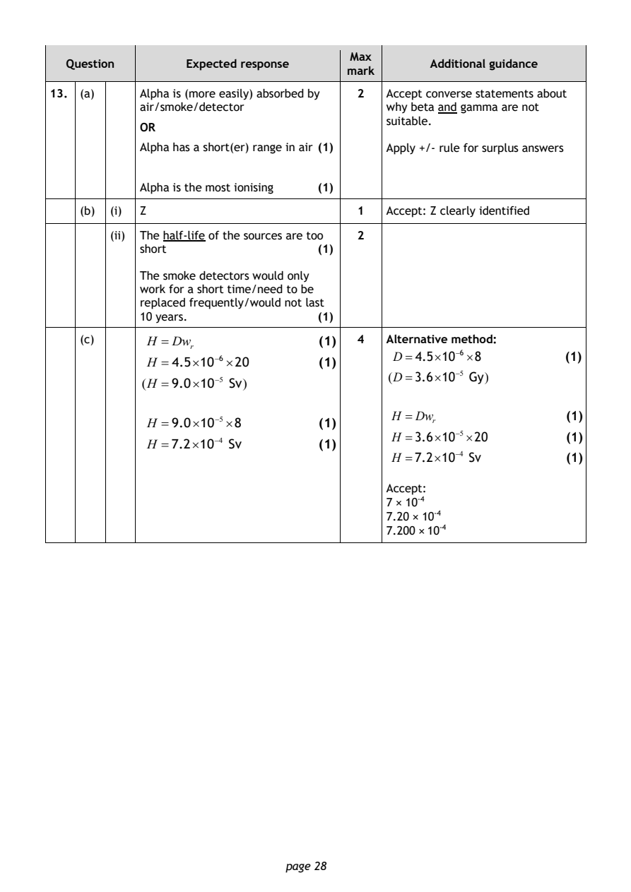
Selectable page text
Max
Question Expected response Additional guidance
mark
13. (a) Alpha is (more easily) absorbed by 2 Accept converse statements about
air/smoke/detector why beta and gamma are not
suitable.
OR
Alpha has a short(er) range in air (1) Apply +/- rule for surplus answers
Alpha is the most ionising (1)
(b) (i) Z 1 Accept: Z clearly identified
(ii) The half-life of the sources are too 2
short (1)
The smoke detectors would only
work for a short time/need to be
replaced frequently/would not last
10 years. (1)
(c) H = Dwᵣ (1) 4 Alternative method:
D=4.5×10⁻⁶×8 (1)
H =4.5×10⁻⁶×20 (1)
(D=3.6×10⁻⁵ Gy)
(H =9.0×10⁻⁵ Sv)
H = Dwᵣ (1)
H =9.0×10⁻⁵×8 (1)
H =3.6×10⁻⁵×20 (1)
H =7.2×10⁻⁴ Sv (1)
H =7.2×10⁻⁴ Sv (1)
Accept:
7 × 10⁻⁴
7.20 × 10⁻⁴
7.200 × 10⁻⁴
page 28PDF page 29
Section 2, Question 14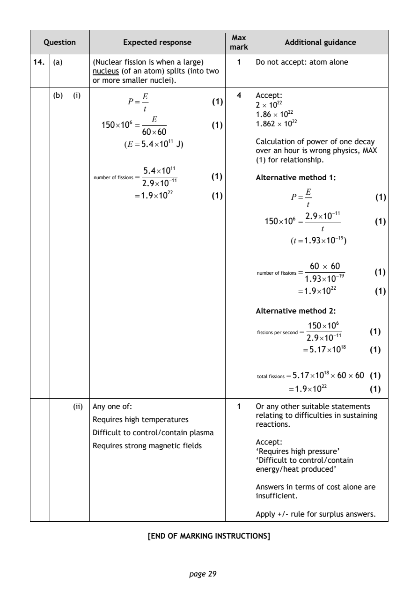
Selectable page text
Max
Question Expected response Additional guidance
mark
14. (a) (Nuclear fission is when a large) 1 D o not accept: atom alone
nucleus (of an atom) splits (into two
or more smaller nuclei).
(b) (i) E 4 Accept:
P= (1)
2 × 10²²
t
1.86 × 10²²
E
150×10⁶ = (1) 1.862 × 10²²
60×60
(E =5.4×10¹¹ J) Calculation of power of one decay
over an hour is wrong physics, MAX
(1) for relationship.
5.4×10¹¹
number of fissions = (1) Alternative method 1:
2.9×10⁻¹¹
E
=1.9×10²² (1) P= (1)
t
2.9×10⁻¹¹
150×10⁶ = (1)
t
(t =1.93×10⁻¹⁹)
60 × 60
= (1)
number of fissions
1.93×10⁻¹⁹
=1.9×10²² (1)
Alternative method 2:
150×10⁶
= (1)
fissions per second
2.9×10⁻¹¹
=5.17×10¹⁸ (1)
=5.17×10¹⁸× 60 × 60 (1)
total fissions
=1.9×10²² (1)
(ii) Any one of: 1 Or any other suitable statements
relating to difficulties in sustaining
Requires high temperatures
reactions.
Difficult to control/contain plasma
Accept:
Requires strong magnetic fields
‘Requires high pressure’
‘Difficult to control/contain
energy/heat produced’
Answers in terms of cost alone are
insufficient.
Apply +/- rule for surplus answers.
[END OF MARKING INSTRUCTIONS]
page 29